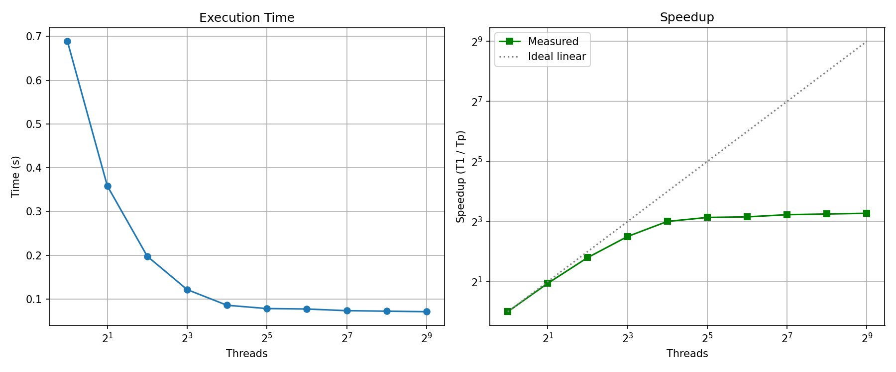
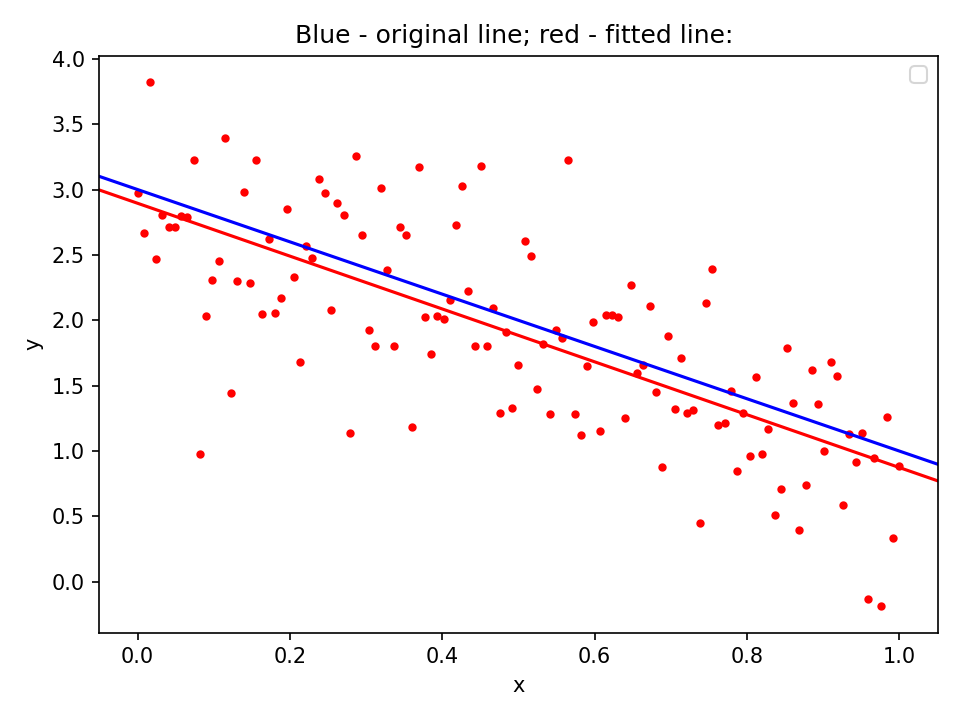
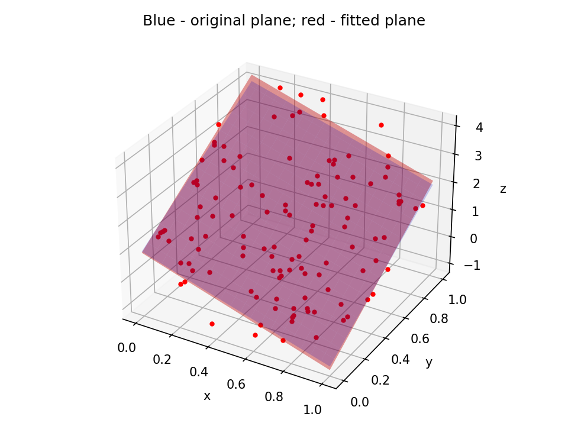
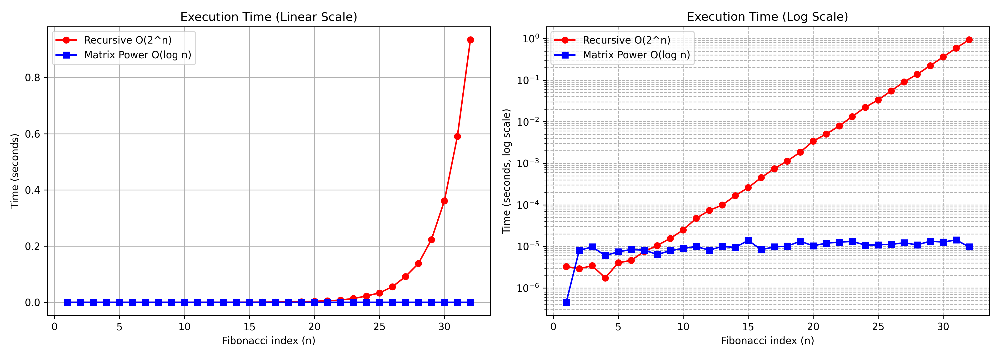

Question: How and why does the NumPy library speed up array operations compared to Python lists?
NumPy achieves substantial speedups over standard Python lists due to architectural and memory-level differences:
list stores pointers to arbitrary objects scattered across memory (pointer indirection), resulting in frequent CPU cache misses. NumPy's ndarray allocates a continuous block of memory for homogeneous data types (e.g., 64-bit floats), maximizing CPU cache locality and spatial prefetching.Measurement of execution time across multiple runs using time.perf_counter().
PS C:\study\1_semester\parallel\hw1> python3 task1_2_1.py sum= 49999995000000 | Wall time: 0.675275 s PS C:\study\1_semester\parallel\hw1> python3 task1_2_1.py sum= 49999995000000 | Wall time: 0.723943 s PS C:\study\1_semester\parallel\hw1> python3 task1_2_1.py sum= 49999995000000 | Wall time: 0.777690 s PS C:\study\1_semester\parallel\hw1> python3 task1_2_1.py sum= 49999995000000 | Wall time: 0.791333 s PS C:\study\1_semester\parallel\hw1> python3 task1_2_1.py sum= 49999995000000 | Wall time: 0.661982 s PS C:\study\1_semester\parallel\hw1> python3 task1_2_1.py sum= 49999995000000 | Wall time: 0.565617 s PS C:\study\1_semester\parallel\hw1> python3 task1_2_1.py sum= 49999995000000 | Wall time: 0.621797 s
Observation: perf_counter() provides monotonic high-resolution timing unaffected by system clock adjustments. Jitter in measurements stems from OS context switches, cache warmth, and background processes.
Benchmarking numpy.dot() under different thread pool limits using the OPENBLAS_NUM_THREADS environment variable.
nechshadimov@parcomp2026:~/sources/hw1$ python3 task1_2_3.py Threads: 1 | Median time: 0.6887 s Threads: 2 | Median time: 0.3583 s Threads: 4 | Median time: 0.1978 s Threads: 8 | Median time: 0.1216 s Threads: 16 | Median time: 0.0858 s Threads: 32 | Median time: 0.0783 s Threads: 64 | Median time: 0.0773 s Threads: 128 | Median time: 0.0735 s Threads: 256 | Median time: 0.0723 s Threads: 512 | Median time: 0.0711 s
Analysis: Near-linear speedup is observed when scaling from 1 to 4 threads (0.6887s → 0.1978s, ~3.5x speedup). Diminishing returns occur beyond 8–16 threads, plateauing at ~0.071s due to physical CPU core limits, memory bus bandwidth saturation, and thread management overhead.

Figure 1: numpy.dot execution time vs. thread count.
Execution of 2D linear least squares curve fitting with n = 123.
nechshadimov@parcomp2026:~/sources/hw1$ python3 task1_2_5.py Elapsed time: 0.000377 seconds result= (array([-1.79102695, 2.89223838]), array([45.87568773]), 2, array([12.48804415, 2.86649369]))

Figure 2: Least squares line fitted to sample data points (n=123).
Extension of the linear least squares approach to 3-dimensional space using Singular Value Decomposition (SVD) / PCA to fit a 3D line through a point cloud.

Figure 3: 3D line fitting through a spatial point cloud.
nechshadimov@parcomp2026:~/sources/hw1$ python3 task3_1.py Fibonacci of 4, 7, 14, 21 Iterative = 3 : Recursive = 3 Iterative = 13 : Recursive = 13 Iterative = 377 : Recursive = 377 Iterative = 10946 : Recursive = 10946 --- Benchmark for n = 4 --- Result: 3 Iterative: 0.00000301 s (inner loop steps: 3) Recursive: 0.00000324 s (function calls: 9) Speedup: Iterative is ~1.1x faster --- Benchmark for n = 7 --- Result: 13 Iterative: 0.00000251 s (inner loop steps: 6) Recursive: 0.00001118 s (function calls: 41) Speedup: Iterative is ~4.5x faster --- Benchmark for n = 14 --- Result: 377 Iterative: 0.00000443 s (inner loop steps: 13) Recursive: 0.00035755 s (function calls: 1219) Speedup: Iterative is ~80.7x faster --- Benchmark for n = 21 --- Result: 10946 Iterative: 0.00000728 s (inner loop steps: 20) Recursive: 0.00980802 s (function calls: 35421) Speedup: Iterative is ~1347.3x faster --- Benchmark for n = 28 --- Result: 317811 Iterative: 0.00002455 s (inner loop steps: 27) Recursive: 0.21109415 s (function calls: 1028457) Speedup: Iterative is ~8597.8x faster --- Benchmark for n = 32 --- Result: 2178309 Iterative: 0.00002353 s (inner loop steps: 31) Recursive: 1.38298760 s (function calls: 7049155) Speedup: Iterative is ~58775.4x faster
Question: Which one is faster? Can we make it run faster?
Answer: The iterative algorithm is exponentially faster. The recursive method duplicates subproblems, scaling at O(phi^n) ~ O(1.618^n), requiring over 7 million calls at n = 32. The iterative version operates in linear time O(n). We can achieve even faster sublinear runtime O(log n) using matrix exponentiation via repeated squaring.
Implementation of matrix repeated squaring evaluated in O(log n) matrix multiplications.

Figure 4: Speedup visualization comparing Recursive O(2^n) and Matrix Exponentiation O(log n) runtimes.